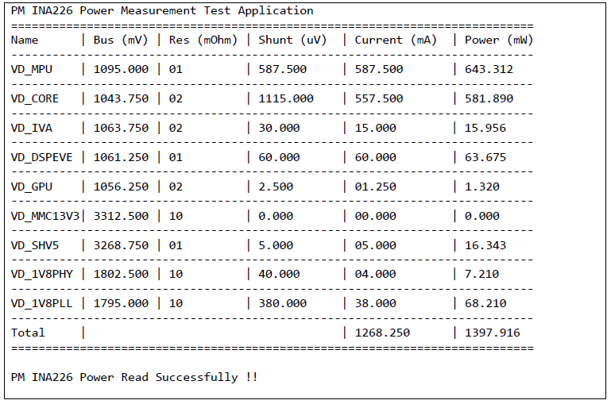

Introduction
Power Management (PM) in Advanced Driver Assist Systems (ADAS) requires setting the right power and clock configurations which allow any IP to consume optimal power. This helps not only reduce the total power consumed by the device but also manage thermal dissipation of the silicon. This document looks at the aspects of power management framework developed for the TDAx family of devices.
The following diagram gives the top level view of the power management software stack. Essentially the software stack is divided into two layers PMHAL and PMLIB.
The power management (PM) software enables optimal power consumption and thermal management scalable across TDA devices. It is divided into three layers namely:
- PRCM Database (DB): abstracts the SoC specific PRCM details regarding the registers, the partitioning of the device and the clock tree details.
- Power Manager Hardware Abstraction Layer (PMHAL): abstracts the programming sequence of atomic power management actions like configuring a PD, CD, PLL, bandgap thermal sensors etc.
- Application Interface Layer (PM Library - PMLIB): abstracts all PRCM architecture details to the application where the developer provides top-level requests of switching on or off a module or configuring a certain module clock to a certain desired frequency and putting CPUs to low power.
The PM Framework’s interaction with other software in the system is as shown in the figure below:
The PM Framework is available on the all the different cores of the system.
- A possible configuration and distribution of PM responsibility across cores by a software developer is as given in the figure below. This is not a restrictive division but an example based on the nature of responsibilities of different cores in the Vision SDK Framework.
Examples
MPU Retention, DSP, IPU, EVE CPU Idle and Wakeup Test
This example is available at "<install_path>/packages/ti/drv/pm/examples/cpuidle" for MPU, IPU, DSP and "<install_path>/packages/ti/drv/pm/examples/arp32_cpuidle" for EVE core.
The MPU Retention and wakeup test is an example running on A15 core for tda2xx/tda2ex/tda2px. The DSP, IPU and EVE CPU Idle tests run on their respective cores. This example demonstrates the ability to take the MPU/IPU/DSP/EVE to low power retention mode and then wakeup using a timer interrupt. The example loops through the low power state and wakeup cycle 10 times before declaring success. The example illustrates the use of Power Management HAL and Library APIs which allow the MPU to go to retention and IPU/DSP/EVE to clock gated state.
Running the example
To run the MPU Retention and Wakeup test, please follow the steps below.
- Open CCS & launch the target configuration.
- Change the SYSBOOT Switch to debug mode or SD mode if booting from SD card.
- Load the “pm_cpuidle_app_a15_0_release.xa15fg” on A15 or “pm_cpuidle_app_c66x_release.xe66” on DSP, “pm_cpuidle_app_ipu1_0_release.xem4” on M4 core present in “<install_path>\packages\ti\binary\pm_cpuidle_app\bin\<PLATFORM>” and execute it from CCS.
Note:
1. For pm_arp32_cpuidle_test_app on Tda2xx/tda2px/Tda3xx, Before connecting the EVM to CCS through JTag, modify the gel files and then
reload these gel files as stated below.
a. For Tda2xx, Enable the macro EVE_SW_CONFIG in TDA2xx_multicore_reset.gel
b. For Tda3xx, do EVE MMU config for DRM registers after OCMC MMU config in TDA3xx_multicore_reset.gel as defined below.
c. SetupEveMmuEntry(cpu_num, mmu_num, 14, 0x54160000, 0x54160000, EVE_MMU_PAGESIZE_16M);
2. For Tda2xx/tda2px, before running the test on EVE, run A15 in order to avoid 32 counter in halt state .
On successful execution the following output can be seen on the UART Console.
| MPU:
|
CPUIdle Test App
XBar is sucessfully connected to inst:35
Enter Idle
Enter Targeted Power State successfully
Exit Idle
Enter Idle
Enter Targeted Power State successfully
Exit Idle
Enter Idle
Enter Targeted Power State successfully
Exit Idle
Enter Idle
Enter Targeted Power State successfully
Exit Idle
Enter Idle
Enter Targeted Power State successfully
Exit Idle
Enter Idle
Enter Targeted Power State successfully
Exit Idle
Enter Idle
Enter Targeted Power State successfully
Exit Idle
Enter Idle
Enter Targeted Power State successfully
Exit Idle
Enter Idle
Enter Targeted Power State successfully
Exit Idle
Enter Idle
Enter Targeted Power State successfully
Exit Idle
Test Completed!!
|
| DSP:
|
PM CPUIdle Test App
XBar is successfully connected to inst:35
Enter Idle
Time Taken to Wakeup:996
Enter Targeted Power State successfully
Enter Idle
Time Taken to Wakeup:977
Enter Targeted Power State successfully
Enter Idle
Time Taken to Wakeup:979
Enter Targeted Power State successfully
Enter Idle
Time Taken to Wakeup:981
Enter Targeted Power State successfully
Enter Idle
Time Taken to Wakeup:980
Enter Targeted Power State successfully
Enter Idle
Time Taken to Wakeup:982
Enter Targeted Power State successfully
Enter Idle
Time Taken to Wakeup:984
Enter Targeted Power State successfully
Enter Idle
Time Taken to Wakeup:983
Enter Targeted Power State successfully
Enter Idle
Time Taken to Wakeup:979
Enter Targeted Power State successfully
Enter Idle
Time Taken to Wakeup:981
Enter Targeted Power State successfully
Test Completed!!
|
| IPU:
|
PM CPUIdle Test App
XBar is sucessfully connected to inst: 35
Enter Idle
Exit Idle
Enter Targeted Power State successfully
Enter Idle
Exit Idle
Enter Targeted Power State successfully
Enter Idle
Exit Idle
Enter Targeted Power State successfully
Enter Idle
Exit Idle
Enter Targeted Power State successfully
Enter Idle
Exit Idle
Enter Targeted Power State successfully
Enter Idle
Exit Idle
Enter Targeted Power State successfully
Enter Idle
Exit Idle
Enter Targeted Power State successfully
Enter Idle
Exit Idle
Enter Targeted Power State successfully
Enter Idle
Exit Idle
Enter Targeted Power State successfully
Enter Idle
Exit Idle
Enter Targeted Power State successfully
Test Completed!!
|
| EVE:
|
PM CPUIdle Test Application
Interrupt enable done
Time Taken to Wakeup:126
ISR done
Enter Targeted Power State successfully
Time Taken to Wakeup:77
ISR done
Enter Targeted Power State successfully
Time Taken to Wakeup:79
ISR done
Enter Targeted Power State successfully
Time Taken to Wakeup:78
ISR done
Enter Targeted Power State successfully
Time Taken to Wakeup:77
ISR done
Enter Targeted Power State successfully
Time Taken to Wakeup:79
ISR done
Enter Targeted Power State successfully
Time Taken to Wakeup:78
ISR done
Enter Targeted Power State successfully
Time Taken to Wakeup:77
ISR done
Enter Targeted Power State successfully
Time Taken to Wakeup:79
ISR done
Enter Targeted Power State successfully
Time Taken to Wakeup:78
ISR done
Enter Targeted Power State successfully
Interrupt disable done
Test Completed!!
PM CPUIdle Test Pass
|
Clock Rate Configuration Test
This example is available at "<install_path>/packages/ti/drv/pm/examples/clkrate_manager"
The Clock Rate Configuration test is an example running on A15 core and IPU (M4) Core for tda2xx/tda2ex/tda2px and IPU (M4) core for tda3xx. This example demonstrates the ability to read the clock rate for different clocks for a given CPU (MPU/IPU/DSP/GPU/IVA/EVE). The example first reads the current clock configuration and then checks for OPP_NOM, OPP_OD and OPP_HIGH frequencies along with voltage changes by using the PMLIB clock rate APIs before declaring pass or fail. The example illustrates the use of Power Management LIB which allows changing the CPU OPP.
Running the example
To run the example, please follow the steps below.
- Open CCS & launch the target configuration.
- Change the SYSBOOT Switch to debug mode or SD mode if booting from SD card.
- Load the “pm_clkrate_app_a15_0_release.xa15fg” on A15 core for TDA2xx or “pm_clkrate_app_ipu1_0_release.xem4” on M4 core for TDA3xx/TDA2xx present in “<install_path>\packages\ti\binary\pm_clkrate_app\bin\tda2xx” or “<install_path>\packages\ti\binary\ pm_clkrate_app\bin\tda3xx” and execute it from CCS.
On successful execution the following output can be seen on the UART Console for TDA2xx or CCS Console for TDA3xx
| PM ClockRate App Logs:
|
PM ClockRate Test App
Clkrate Manager Cpu Set and Get Frequency test:
the Clock Rate passed for ModID PMHAL_PRCM_MOD_GPU ClkId PMHAL_PRCM_CLK_GPU_HYD_GCLK is 425600000 Hz
ClockSET for ModID PMHAL_PRCM_MOD_GPU ClkId PMHAL_PRCM_CLK_GPU_HYD_GCLK Passed
After Clock Rate Set, the Clock Rate for ModID PMHAL_PRCM_MOD_GPU ClkId PMHAL_PRCM_CLK_GPU_HYD_GCLK is 500000000 Hz
the Clock Rate passed for ModID PMHAL_PRCM_MOD_GPU ClkId PMHAL_PRCM_CLK_GENERIC is 425600000 Hz
ClockSET for ModID PMHAL_PRCM_MOD_GPU ClkId PMHAL_PRCM_CLK_GENERIC Passed
After Clock Rate Set, the Clock Rate for ModID PMHAL_PRCM_MOD_GPU ClkId PMHAL_PRCM_CLK_GENERIC is 532000000 Hz
the Clock Rate passed for ModID PMHAL_PRCM_MOD_DSP1 ClkId PMHAL_PRCM_CLK_GENERIC is 600000000 Hz
ClockSET for ModID PMHAL_PRCM_MOD_DSP1 ClkId PMHAL_PRCM_CLK_GENERIC Passed
After Clock Rate Set, the Clock Rate for ModID PMHAL_PRCM_MOD_DSP1 ClkId PMHAL_PRCM_CLK_GENERIC is 600000000 Hz
the Clock Rate passed for ModID PMHAL_PRCM_MOD_EVE1 ClkId PMHAL_PRCM_CLK_GENERIC is 535000000 Hz
ClockSET for ModID PMHAL_PRCM_MOD_EVE1 ClkId PMHAL_PRCM_CLK_GENERIC Passed
After Clock Rate Set, the Clock Rate for ModID PMHAL_PRCM_MOD_EVE1 ClkId PMHAL_PRCM_CLK_GENERIC is 650000000 Hz
the Clock Rate passed for ModID PMHAL_PRCM_MOD_MPU ClkId PMHAL_PRCM_CLK_GENERIC is 750000000 Hz
ClockSET for ModID PMHAL_PRCM_MOD_MPU ClkId PMHAL_PRCM_CLK_GENERIC Passed
After Clock Rate Set, the Clock Rate for ModID PMHAL_PRCM_MOD_MPU ClkId PMHAL_PRCM_CLK_GENERIC is 1500000000 Hz
the Clock Rate passed for ModID PMHAL_PRCM_MOD_MPU ClkId PMHAL_PRCM_CLK_GENERIC is 1500000000 Hz
ClockSET for ModID PMHAL_PRCM_MOD_MPU ClkId PMHAL_PRCM_CLK_GENERIC Passed
After Clock Rate Set, the Clock Rate for ModID PMHAL_PRCM_MOD_MPU ClkId PMHAL_PRCM_CLK_GENERIC is 1176000000 Hz
Clkrate Manager Cpu Set and Get Frequency test Completed!!
Clkrate Manager Bypass Freq Test:
the Clock Rate passed for ModID PMHAL_PRCM_MOD_DSP1 ClkId PMHAL_PRCM_CLK_GENERIC is 532000000 Hz
the Clock Rate passed for ModID PMHAL_PRCM_MOD_EVE1 ClkId PMHAL_PRCM_CLK_GENERIC is 650000000 Hz
Clkrate Manager Bypass Freq Test Completed!!
Clkrate Manager Module Set Frequency test:
the Clock Rate passed for ModID PMHAL_PRCM_MOD_DSS ClkId PMHAL_PRCM_CLK_DSS_GFCLK with clkrate 192000000 Hz
ClockSET for ModID PMHAL_PRCM_MOD_DSS ClkId PMHAL_PRCM_CLK_DSS_GFCLK Passed for clkRate 192000000 Hz
After Clock Rate Set,Clock Rate for ModID PMHAL_PRCM_MOD_DSS ClkId PMHAL_PRCM_CLK_DSS_GFCLK is 192000000 Hz
the Clock Rate passed for ModID PMHAL_PRCM_MOD_CPGMAC ClkId PMHAL_PRCM_CLK_GMAC_RFT_CLK with clkrate 266000000 Hz
ClockSET for ModID PMHAL_PRCM_MOD_CPGMAC ClkId PMHAL_PRCM_CLK_GMAC_RFT_CLK Passed for clkRate 451584000 Hz
After Clock Rate Set,Clock Rate for ModID PMHAL_PRCM_MOD_CPGMAC ClkId PMHAL_PRCM_CLK_GMAC_RFT_CLK is 451584000 Hz
the Clock Rate passed for ModID PMHAL_PRCM_MOD_I2C5 ClkId PMHAL_PRCM_CLK_IPU_96M_GFCLK with clkrate 96000000 Hz
ClockSET for ModID PMHAL_PRCM_MOD_I2C5 ClkId PMHAL_PRCM_CLK_IPU_96M_GFCLK Passed for clkRate 96000000 Hz
After Clock Rate Set,Clock Rate for ModID PMHAL_PRCM_MOD_I2C5 ClkId PMHAL_PRCM_CLK_IPU_96M_GFCLK is 96000000 Hz
the Clock Rate passed for ModID PMHAL_PRCM_MOD_MCASP1 ClkId PMHAL_PRCM_CLK_MCASP1_AHCLKR with clkrate 112896000 Hz
ClockSET for ModID PMHAL_PRCM_MOD_MCASP1 ClkId PMHAL_PRCM_CLK_MCASP1_AHCLKR Passed for clkRate 56448000 Hz
After Clock Rate Set,Clock Rate for ModID PMHAL_PRCM_MOD_MCASP1 ClkId PMHAL_PRCM_CLK_MCASP1_AHCLKR is 56448000 Hz
the Clock Rate passed for ModID PMHAL_PRCM_MOD_TIMER5 ClkId PMHAL_PRCM_CLK_TIMER5_GFCLK with clkrate 20000000 Hz
ClockSET for ModID PMHAL_PRCM_MOD_TIMER5 ClkId PMHAL_PRCM_CLK_TIMER5_GFCLK Passed for clkRate 451584000 Hz
After Clock Rate Set,Clock Rate for ModID PMHAL_PRCM_MOD_TIMER5 ClkId PMHAL_PRCM_CLK_TIMER5_GFCLK is 451584000 Hz
the Clock Rate passed for ModID PMHAL_PRCM_MOD_DCAN1 ClkId PMHAL_PRCM_CLK_DCAN1_SYS_CLK with clkrate 20000000 Hz
ClockSET for ModID PMHAL_PRCM_MOD_DCAN1 ClkId PMHAL_PRCM_CLK_DCAN1_SYS_CLK Passed for clkRate 22579200 Hz
After Clock Rate Set,Clock Rate for ModID PMHAL_PRCM_MOD_DCAN1 ClkId PMHAL_PRCM_CLK_DCAN1_SYS_CLK is 22579200 Hz
the Clock Rate passed for ModID PMHAL_PRCM_MOD_GPIO1 ClkId PMHAL_PRCM_CLK_WKUPAON_SYS_GFCLK with clkrate 32786 Hz
ClockSET for ModID PMHAL_PRCM_MOD_GPIO1 ClkId PMHAL_PRCM_CLK_WKUPAON_SYS_GFCLK Passed for clkRate 32786 Hz
After Clock Rate Set,Clock Rate for ModID PMHAL_PRCM_MOD_GPIO1 ClkId PMHAL_PRCM_CLK_WKUPAON_SYS_GFCLK is 32786 Hz
Clkrate Manager module Set Frequency test Completed!!
|
PM System Configuration Test
This example is available at "<install_path>/packages/ti/drv/pm/examples/systemconfig"
The PM System Configuration test is an example running on tda2xx A15 core, tda2xx M4 core and tda3xx IPU (M4) core. This example demonstrates the ability to configure the desired power state for a given module based on the entries in the power spread sheet. The example loops through the different modules and power states and tries to program the same for each module using PM LIB sysconfig APIs before declaring pass or fail. The example illustrates the use of Power Management LIB which allows system configuration.
Running the example
To run the PM System Configuration test, please follow the steps below
- Open CCS & launch the target configuration.
- Change the SYSBOOT Switch to debug mode or SD mode if booting from SD card.
- Load the “pm_systemconfig_app_a15_0_release.xa15fg” on A15 core for TDA2xx/tda2ex/tda2px or “pm_systemconfig_app_ipu1_0_release.xem4” on M4 core for TDA3xx present in “<install_path>\packages\ti\binary\pm_systemconfig_app\bin\<board>” and execute it from CCS.
On successful execution the following output can be seen on the UART Console for TDA2xx or CCS Console for TDA3xx.
| PM System Configuration App Logs:
|
PM System Config Test App
PMHAL_PRCM_MOD_OCP2SCP1: PASS
PMHAL_PRCM_MOD_OCP2SCP3: PASS
PMHAL_PRCM_MOD_ATL: PMLIB_SYS_CONFIG_DISABLED PASS
PMHAL_PRCM_MOD_DUMMY_MODULE4: No Valid Module Mode, Cannot be disabled from software
Optional Clocks if any have been disabled
PMHAL_PRCM_MOD_DUMMY_MODULE1: No Valid Module Mode, Cannot be disabled from software
Optional Clocks if any have been disabled
PMHAL_PRCM_MOD_DUMMY_MODULE2: No Valid Module Mode, Cannot be disabled from software
Optional Clocks if any have been disabled
PMHAL_PRCM_MOD_DUMMY_MODULE3: No Valid Module Mode, Cannot be disabled from software
Optional Clocks if any have been disabled
PMHAL_PRCM_MOD_IO_SRCOMP_CORE: No Valid Module Mode, Cannot be disabled from software
Optional Clocks if any have been disabled
PMHAL_PRCM_MOD_SMARTREFLEX_CORE: PMLIB_SYS_CONFIG_ALWAYS_ENABLED PASS
PMHAL_PRCM_MOD_SMARTREFLEX_DSPEVE: PMLIB_SYS_CONFIG_ALWAYS_ENABLED PASS
PMHAL_PRCM_MOD_SMARTREFLEX_GPU: PMLIB_SYS_CONFIG_ALWAYS_ENABLED PASS
PMHAL_PRCM_MOD_SMARTREFLEX_IVAHD: PMLIB_SYS_CONFIG_ALWAYS_ENABLED PASS
PMHAL_PRCM_MOD_SMARTREFLEX_MPU: PMLIB_SYS_CONFIG_ALWAYS_ENABLED PASS
PMHAL_PRCM_MOD_USB_PHY1_ALWAYS_ON: No Valid Module Mode, Cannot be disabled from software
Optional Clocks if any have been disabled
PMHAL_PRCM_MOD_USB_PHY2_ALWAYS_ON: No Valid Module Mode, Cannot be disabled from software
Optional Clocks if any have been disabled
PMHAL_PRCM_MOD_USB_PHY3_ALWAYS_ON: No Valid Module Mode, Cannot be disabled from software
Optional Clocks if any have been disabled
PMHAL_PRCM_MOD_EFUSE_CTRL_CUST: PMLIB_SYS_CONFIG_ALWAYS_ENABLED PASS
PMHAL_PRCM_MOD_DMA_SYSTEM: PMLIB_SYS_CONFIG_ALWAYS_ENABLED PASS
PMHAL_PRCM_MOD_DSP1: PMLIB_SYS_CONFIG_ALWAYS_ENABLED PASS
PMHAL_PRCM_MOD_DSP2: PMLIB_SYS_CONFIG_AUTO_CG PASS
PMHAL_PRCM_MOD_BB2D: PMLIB_SYS_CONFIG_DISABLED PASS
PMHAL_PRCM_MOD_DSS: PMLIB_SYS_CONFIG_ALWAYS_ENABLED PASS
PMHAL_PRCM_MOD_SDVENC: No Valid Module Mode, Cannot be disabled from software
Optional Clocks if any have been disabled
PMHAL_PRCM_MOD_DLL: No Valid Module Mode, Cannot be enabled from software
Optional Clocks if any have been enabled
PMHAL_PRCM_MOD_DMM: PMLIB_SYS_CONFIG_ALWAYS_ENABLED PASS
PMHAL_PRCM_MOD_EMIF1: PMLIB_SYS_CONFIG_ALWAYS_ENABLED PASS
PMHAL_PRCM_MOD_EMIF2: PMLIB_SYS_CONFIG_ALWAYS_ENABLED PASS
PMHAL_PRCM_MOD_EMIF_OCP_FW: PMLIB_SYS_CONFIG_ALWAYS_ENABLED PASS
PMHAL_PRCM_MOD_EVE1: PMLIB_SYS_CONFIG_ALWAYS_ENABLED PASS
PMHAL_PRCM_MOD_EVE2: PMLIB_SYS_CONFIG_ALWAYS_ENABLED PASS
PMHAL_PRCM_MOD_EVE3: PMLIB_SYS_CONFIG_AUTO_CG PASS
PMHAL_PRCM_MOD_EVE4: PMLIB_SYS_CONFIG_AUTO_CG PASS
PMHAL_PRCM_MOD_CPGMAC: PMLIB_SYS_CONFIG_DISABLED PASS
PMHAL_PRCM_MOD_GPU: PMLIB_SYS_CONFIG_DISABLED PASS
PMHAL_PRCM_MOD_I2C5: PMLIB_SYS_CONFIG_ALWAYS_ENABLED PASS
PMHAL_PRCM_MOD_MCASP1: PMLIB_SYS_CONFIG_DISABLED PASS
PMHAL_PRCM_MOD_TIMER5: PMLIB_SYS_CONFIG_ALWAYS_ENABLED PASS
PMHAL_PRCM_MOD_TIMER6: PMLIB_SYS_CONFIG_ALWAYS_ENABLED PASS
PMHAL_PRCM_MOD_TIMER7: PMLIB_SYS_CONFIG_ALWAYS_ENABLED PASS
PMHAL_PRCM_MOD_TIMER8: PMLIB_SYS_CONFIG_ALWAYS_ENABLED PASS
PMHAL_PRCM_MOD_UART6: PMLIB_SYS_CONFIG_DISABLED PASS
PMHAL_PRCM_MOD_IPU1: PMLIB_SYS_CONFIG_AUTO_CG PASS
PMHAL_PRCM_MOD_IPU2: PMLIB_SYS_CONFIG_AUTO_CG PASS
PMHAL_PRCM_MOD_IVA: PMLIB_SYS_CONFIG_AUTO_CG PASS
PMHAL_PRCM_MOD_SL2: PMLIB_SYS_CONFIG_AUTO_CG PASS
PMHAL_PRCM_MOD_IEEE1500_2_OCP: PMLIB_SYS_CONFIG_DISABLED PASS
PMHAL_PRCM_MOD_MMC1: PMLIB_SYS_CONFIG_DISABLED PASS
PMHAL_PRCM_MOD_MMC2: PMLIB_SYS_CONFIG_DISABLED PASS
PMHAL_PRCM_MOD_MLB_SS: PMLIB_SYS_CONFIG_DISABLED PASS
PMHAL_PRCM_MOD_SATA: PMLIB_SYS_CONFIG_DISABLED PASS
PMHAL_PRCM_MOD_OCP2SCP1: PMLIB_SYS_CONFIG_DISABLED PASS
PMHAL_PRCM_MOD_OCP2SCP3: PMLIB_SYS_CONFIG_DISABLED PASS
PMHAL_PRCM_MOD_USB_OTG_SS1: PMLIB_SYS_CONFIG_DISABLED PASS
PMHAL_PRCM_MOD_USB_OTG_SS2: PMLIB_SYS_CONFIG_DISABLED PASS
PMHAL_PRCM_MOD_USB_OTG_SS3: PMLIB_SYS_CONFIG_DISABLED PASS
PMHAL_PRCM_MOD_USB_OTG_SS4: PMLIB_SYS_CONFIG_DISABLED PASS
PMHAL_PRCM_MOD_CTRL_MODULE_BANDGAP: Module has dependencies
PMHAL_PRCM_MOD_DLL_AGING: Module has dependencies
PMHAL_PRCM_MOD_L3_INSTR: PMLIB_SYS_CONFIG_ALWAYS_ENABLED PASS
PMHAL_PRCM_MOD_L3_MAIN_2: PMLIB_SYS_CONFIG_ALWAYS_ENABLED PASS
PMHAL_PRCM_MOD_OCP_WP_NOC: PMLIB_SYS_CONFIG_DISABLED PASS
PMHAL_PRCM_MOD_GPMC: PMLIB_SYS_CONFIG_DISABLED PASS
PMHAL_PRCM_MOD_L3_MAIN_1: PMLIB_SYS_CONFIG_ALWAYS_ENABLED PASS
PMHAL_PRCM_MOD_MMU_EDMA: PMLIB_SYS_CONFIG_ALWAYS_ENABLED PASS
PMHAL_PRCM_MOD_MMU_PCIESS: PMLIB_SYS_CONFIG_ALWAYS_ENABLED PASS
PMHAL_PRCM_MOD_OCMC_RAM1: PMLIB_SYS_CONFIG_ALWAYS_ENABLED PASS
PMHAL_PRCM_MOD_OCMC_RAM2: PMLIB_SYS_CONFIG_ALWAYS_ENABLED PASS
PMHAL_PRCM_MOD_OCMC_RAM3: PMLIB_SYS_CONFIG_ALWAYS_ENABLED PASS
PMHAL_PRCM_MOD_OCMC_ROM: PMLIB_SYS_CONFIG_ALWAYS_ENABLED PASS
PMHAL_PRCM_MOD_SPARE_IVA2: No Valid Module Mode, Cannot be disabled from software
Optional Clocks if any have been disabled
PMHAL_PRCM_MOD_VCP1: Module has dependencies
PMHAL_PRCM_MOD_VCP2: Module has dependencies
PMHAL_PRCM_MOD_SPARE_CME: No Valid Module Mode, Cannot be disabled from software
Optional Clocks if any have been disabled
PMHAL_PRCM_MOD_SPARE_HDMI: No Valid Module Mode, Cannot be disabled from software
Optional Clocks if any have been disabled
PMHAL_PRCM_MOD_SPARE_ICM: No Valid Module Mode, Cannot be disabled from software
Optional Clocks if any have been disabled
PMHAL_PRCM_MOD_SPARE_SATA2: No Valid Module Mode, Cannot be disabled from software
Optional Clocks if any have been disabled
PMHAL_PRCM_MOD_SPARE_UNKNOWN4: No Valid Module Mode, Cannot be disabled from software
Optional Clocks if any have been disabled
PMHAL_PRCM_MOD_SPARE_UNKNOWN5: No Valid Module Mode, Cannot be disabled from software
Optional Clocks if any have been disabled
PMHAL_PRCM_MOD_SPARE_UNKNOWN6: No Valid Module Mode, Cannot be disabled from software
Optional Clocks if any have been disabled
PMHAL_PRCM_MOD_SPARE_VIDEOPLL1: No Valid Module Mode, Cannot be disabled from software
Optional Clocks if any have been disabled
PMHAL_PRCM_MOD_SPARE_VIDEOPLL2: No Valid Module Mode, Cannot be disabled from software
Optional Clocks if any have been disabled
PMHAL_PRCM_MOD_SPARE_VIDEOPLL3: No Valid Module Mode, Cannot be disabled from software
Optional Clocks if any have been disabled
PMHAL_PRCM_MOD_TPCC: PMLIB_SYS_CONFIG_ALWAYS_ENABLED PASS
PMHAL_PRCM_MOD_TPTC1: PMLIB_SYS_CONFIG_ALWAYS_ENABLED PASS
PMHAL_PRCM_MOD_TPTC2: PMLIB_SYS_CONFIG_ALWAYS_ENABLED PASS
PMHAL_PRCM_MOD_L4_CFG: PMLIB_SYS_CONFIG_ALWAYS_ENABLED PASS
PMHAL_PRCM_MOD_OCP2SCP2: PMLIB_SYS_CONFIG_ALWAYS_ENABLED PASS
PMHAL_PRCM_MOD_SAR_ROM: PMLIB_SYS_CONFIG_ALWAYS_ENABLED PASS
PMHAL_PRCM_MOD_SPARE_SMARTREFLEX_RTC: No Valid Module Mode, Cannot be enabled from software
Optional Clocks if any have been enabled
PMHAL_PRCM_MOD_SPARE_SMARTREFLEX_SDRAM: No Valid Module Mode, Cannot be enabled from software
Optional Clocks if any have been enabled
PMHAL_PRCM_MOD_SPARE_SMARTREFLEX_WKUP: No Valid Module Mode, Cannot be enabled from software
Optional Clocks if any have been enabled
PMHAL_PRCM_MOD_SPINLOCK: Module has dependencies
PMHAL_PRCM_MOD_IO_DELAY_BLOCK: No Valid Module Mode, Cannot be enabled from software
Optional Clocks if any have been enabled
PMHAL_PRCM_MOD_MAILBOX1: PMLIB_SYS_CONFIG_ALWAYS_ENABLED PASS
PMHAL_PRCM_MOD_MAILBOX10: PMLIB_SYS_CONFIG_ALWAYS_ENABLED PASS
PMHAL_PRCM_MOD_MAILBOX11: PMLIB_SYS_CONFIG_ALWAYS_ENABLED PASS
PMHAL_PRCM_MOD_MAILBOX12: PMLIB_SYS_CONFIG_ALWAYS_ENABLED PASS
PMHAL_PRCM_MOD_MAILBOX13: PMLIB_SYS_CONFIG_ALWAYS_ENABLED PASS
PMHAL_PRCM_MOD_MAILBOX2: Module has dependencies
PMHAL_PRCM_MOD_MAILBOX3: Module has dependencies
PMHAL_PRCM_MOD_MAILBOX4: Module has dependencies
PMHAL_PRCM_MOD_MAILBOX5: Module has dependencies
PMHAL_PRCM_MOD_MAILBOX6: Module has dependencies
PMHAL_PRCM_MOD_MAILBOX7: Module has dependencies
PMHAL_PRCM_MOD_MAILBOX8: Module has dependencies
PMHAL_PRCM_MOD_MAILBOX9: Module has dependencies
PMHAL_PRCM_MOD_I2C1: PMLIB_SYS_CONFIG_ALWAYS_ENABLED PASS
PMHAL_PRCM_MOD_I2C2: PMLIB_SYS_CONFIG_ALWAYS_ENABLED PASS
PMHAL_PRCM_MOD_I2C3: PMLIB_SYS_CONFIG_ALWAYS_ENABLED PASS
PMHAL_PRCM_MOD_I2C4: PMLIB_SYS_CONFIG_ALWAYS_ENABLED PASS
PMHAL_PRCM_MOD_L4_PER1: Module has dependencies
PMHAL_PRCM_MOD_TIMER10: PMLIB_SYS_CONFIG_DISABLED PASS
PMHAL_PRCM_MOD_TIMER11: PMLIB_SYS_CONFIG_DISABLED PASS
PMHAL_PRCM_MOD_TIMER2: PMLIB_SYS_CONFIG_ALWAYS_ENABLED PASS
PMHAL_PRCM_MOD_TIMER3: PMLIB_SYS_CONFIG_ALWAYS_ENABLED PASS
PMHAL_PRCM_MOD_TIMER4: PMLIB_SYS_CONFIG_ALWAYS_ENABLED PASS
PMHAL_PRCM_MOD_TIMER9: PMLIB_SYS_CONFIG_ALWAYS_ENABLED PASS
PMHAL_PRCM_MOD_ELM: Module has dependencies
PMHAL_PRCM_MOD_HDQ1W: PMLIB_SYS_CONFIG_DISABLED PASS
PMHAL_PRCM_MOD_MCSPI1: PMLIB_SYS_CONFIG_DISABLED PASS
PMHAL_PRCM_MOD_MCSPI2: PMLIB_SYS_CONFIG_DISABLED PASS
PMHAL_PRCM_MOD_MCSPI3: PMLIB_SYS_CONFIG_DISABLED PASS
PMHAL_PRCM_MOD_MCSPI4: PMLIB_SYS_CONFIG_DISABLED PASS
PMHAL_PRCM_MOD_UART1: PMLIB_SYS_CONFIG_ALWAYS_ENABLED PASS
PMHAL_PRCM_MOD_UART2: PMLIB_SYS_CONFIG_DISABLED PASS
PMHAL_PRCM_MOD_UART3: PMLIB_SYS_CONFIG_DISABLED PASS
PMHAL_PRCM_MOD_UART4: PMLIB_SYS_CONFIG_DISABLED PASS
PMHAL_PRCM_MOD_UART5: PMLIB_SYS_CONFIG_DISABLED PASS
PMHAL_PRCM_MOD_GPIO2: PMLIB_SYS_CONFIG_ALWAYS_ENABLED PASS
PMHAL_PRCM_MOD_GPIO3: PMLIB_SYS_CONFIG_ALWAYS_ENABLED PASS
PMHAL_PRCM_MOD_GPIO4: PMLIB_SYS_CONFIG_ALWAYS_ENABLED PASS
PMHAL_PRCM_MOD_GPIO5: PMLIB_SYS_CONFIG_ALWAYS_ENABLED PASS
PMHAL_PRCM_MOD_GPIO6: PMLIB_SYS_CONFIG_DISABLED PASS
PMHAL_PRCM_MOD_GPIO7: PMLIB_SYS_CONFIG_DISABLED PASS
PMHAL_PRCM_MOD_GPIO8: PMLIB_SYS_CONFIG_DISABLED PASS
PMHAL_PRCM_MOD_MMC3: PMLIB_SYS_CONFIG_DISABLED PASS
PMHAL_PRCM_MOD_MMC4: PMLIB_SYS_CONFIG_DISABLED PASS
PMHAL_PRCM_MOD_DCAN2: PMLIB_SYS_CONFIG_DISABLED PASS
PMHAL_PRCM_MOD_L4_PER2: PMLIB_SYS_CONFIG_ALWAYS_ENABLED PASS
PMHAL_PRCM_MOD_UART7: PMLIB_SYS_CONFIG_DISABLED PASS
PMHAL_PRCM_MOD_UART8: PMLIB_SYS_CONFIG_DISABLED PASS
PMHAL_PRCM_MOD_UART9: PMLIB_SYS_CONFIG_DISABLED PASS
PMHAL_PRCM_MOD_PRUSS1: PMLIB_SYS_CONFIG_DISABLED PASS
PMHAL_PRCM_MOD_PRUSS2: PMLIB_SYS_CONFIG_DISABLED PASS
PMHAL_PRCM_MOD_MCASP2: PMLIB_SYS_CONFIG_DISABLED PASS
PMHAL_PRCM_MOD_MCASP3: PMLIB_SYS_CONFIG_DISABLED PASS
PMHAL_PRCM_MOD_MCASP4: PMLIB_SYS_CONFIG_DISABLED PASS
PMHAL_PRCM_MOD_MCASP5: PMLIB_SYS_CONFIG_DISABLED PASS
PMHAL_PRCM_MOD_MCASP6: PMLIB_SYS_CONFIG_DISABLED PASS
PMHAL_PRCM_MOD_MCASP7: PMLIB_SYS_CONFIG_DISABLED PASS
PMHAL_PRCM_MOD_MCASP8: PMLIB_SYS_CONFIG_DISABLED PASS
PMHAL_PRCM_MOD_PWMSS1: PMLIB_SYS_CONFIG_DISABLED PASS
PMHAL_PRCM_MOD_PWMSS2: PMLIB_SYS_CONFIG_DISABLED PASS
PMHAL_PRCM_MOD_PWMSS3: PMLIB_SYS_CONFIG_DISABLED PASS
PMHAL_PRCM_MOD_QSPI: PMLIB_SYS_CONFIG_DISABLED PASS
PMHAL_PRCM_MOD_L4_PER3: PMLIB_SYS_CONFIG_ALWAYS_ENABLED PASS
PMHAL_PRCM_MOD_TIMER13: PMLIB_SYS_CONFIG_DISABLED PASS
PMHAL_PRCM_MOD_TIMER14: PMLIB_SYS_CONFIG_DISABLED PASS
PMHAL_PRCM_MOD_TIMER15: PMLIB_SYS_CONFIG_DISABLED PASS
PMHAL_PRCM_MOD_TIMER16: PMLIB_SYS_CONFIG_DISABLED PASS
PMHAL_PRCM_MOD_AES1: PMLIB_SYS_CONFIG_ALWAYS_ENABLED PASS
PMHAL_PRCM_MOD_AES2: PMLIB_SYS_CONFIG_ALWAYS_ENABLED PASS
PMHAL_PRCM_MOD_DES3DES: PMLIB_SYS_CONFIG_ALWAYS_ENABLED PASS
PMHAL_PRCM_MOD_DMA_CRYPTO: PMLIB_SYS_CONFIG_DISABLED PASS
PMHAL_PRCM_MOD_FPKA: PMLIB_SYS_CONFIG_DISABLED PASS
PMHAL_PRCM_MOD_RNG: PMLIB_SYS_CONFIG_DISABLED PASS
PMHAL_PRCM_MOD_SHA2MD51: PMLIB_SYS_CONFIG_DISABLED PASS
PMHAL_PRCM_MOD_SHA2MD52: PMLIB_SYS_CONFIG_DISABLED PASS
PMHAL_PRCM_MOD_MPU: PMLIB_SYS_CONFIG_ALWAYS_ENABLED PASS
PMHAL_PRCM_MOD_MPU_MPU_DBG: PMLIB_SYS_CONFIG_ALWAYS_ENABLED PASS
PMHAL_PRCM_MOD_PCIESS1: PMLIB_SYS_CONFIG_ALWAYS_ENABLED PASS
PMHAL_PRCM_MOD_CSI1: PMLIB_SYS_CONFIG_DISABLED PASS
PMHAL_PRCM_MOD_CSI2: PMLIB_SYS_CONFIG_DISABLED PASS
PMHAL_PRCM_MOD_LVDSRX: PMLIB_SYS_CONFIG_DISABLED PASS
PMHAL_PRCM_MOD_VIP1: PMLIB_SYS_CONFIG_ALWAYS_ENABLED PASS
PMHAL_PRCM_MOD_VIP2: PMLIB_SYS_CONFIG_ALWAYS_ENABLED PASS
PMHAL_PRCM_MOD_VIP3: PMLIB_SYS_CONFIG_DISABLED PASS
PMHAL_PRCM_MOD_VPE: PMLIB_SYS_CONFIG_ALWAYS_ENABLED PASS
PMHAL_PRCM_MOD_DEBUG_LOGIC: No Valid Module Mode, Cannot be enabled from software
Optional Clocks if any have been enabled
PMHAL_PRCM_MOD_MPU_EMU_DBG: PMLIB_SYS_CONFIG_ALWAYS_ENABLED PASS
PMHAL_PRCM_MOD_ADC: No Valid Module Mode, Cannot be disabled from software
Optional Clocks if any have been disabled
PMHAL_PRCM_MOD_COUNTER_32K: PMLIB_SYS_CONFIG_ALWAYS_ENABLED PASS
PMHAL_PRCM_MOD_CTRL_MODULE_WKUP: No Valid Module Mode, Cannot be disabled from software
Optional Clocks if any have been disabled
PMHAL_PRCM_MOD_DCAN1: PMLIB_SYS_CONFIG_DISABLED PASS
PMHAL_PRCM_MOD_GPIO1: PMLIB_SYS_CONFIG_DISABLED PASS
PMHAL_PRCM_MOD_IO_SRCOMP_WKUP: No Valid Module Mode, Cannot be disabled from software
Optional Clocks if any have been disabled
PMHAL_PRCM_MOD_KBD: PMLIB_SYS_CONFIG_DISABLED PASS
PMHAL_PRCM_MOD_L4_WKUP: Module has dependencies
PMHAL_PRCM_MOD_SAR_RAM: Module has dependencies
PMHAL_PRCM_MOD_SPARE_SAFETY1: No Valid Module Mode, Cannot be disabled from software
Optional Clocks if any have been disabled
PMHAL_PRCM_MOD_SPARE_SAFETY2: No Valid Module Mode, Cannot be disabled from software
Optional Clocks if any have been disabled
PMHAL_PRCM_MOD_SPARE_SAFETY3: No Valid Module Mode, Cannot be disabled from software
Optional Clocks if any have been disabled
PMHAL_PRCM_MOD_SPARE_SAFETY4: No Valid Module Mode, Cannot be disabled from software
Optional Clocks if any have been disabled
PMHAL_PRCM_MOD_SPARE_UNKNOWN2: No Valid Module Mode, Cannot be disabled from software
Optional Clocks if any have been disabled
PMHAL_PRCM_MOD_SPARE_UNKNOWN3: No Valid Module Mode, Cannot be disabled from software
Optional Clocks if any have been disabled
PMHAL_PRCM_MOD_TIMER1: PMLIB_SYS_CONFIG_ALWAYS_ENABLED PASS
PMHAL_PRCM_MOD_TIMER12: Module has dependencies
PMHAL_PRCM_MOD_UART10: PMLIB_SYS_CONFIG_DISABLED PASS
PMHAL_PRCM_MOD_WD_TIMER1: PMLIB_SYS_CONFIG_ALWAYS_ENABLED PASS
PMHAL_PRCM_MOD_WD_TIMER2: PMLIB_SYS_CONFIG_DISABLED PASS
Sysconfig Test case has passed
|
INA based power measurement
This example is available at "<install_path>/packages/ti/drv/pm/examples/ina226_power_measure"
The Junction Temperature Sensor test is an example running on tda2xx A15 core. This example demonstrates the ability to read the power from on board INA226 power monitors. The example loops over the different voltage rails supported by the device and reports the current and power consumed by the device voltage rails.
On the TDA2xx board, make the following changes to the TI EVM for the test to pass
- STEP 1: Change the select for RU113 multiplexer on the board by making R264 = 10k & R265 = NO-POP. This allows DCAN2 Signaling.
- STEP 2: Then perform a blue wiring for the following connections:
- DCAN2_TX (JP3 pin 1) to PM_I2C_SDA (J8 pin 2)
- DCAN2_RX (JP3 pin 2) to PM_I2C_SCL (J8 pin 1)
- From Software Configure the PAD configuration registers such that the gpio6_14 and gpio6_15 pads operate as I2C3_SDA and I2C3_SCL respectively. Note that this is taken care from software. Additionally ensure SEL_I2C3_CAN2 is high.
Running the example
To run the INA 226 power measurement test, please follow the steps below
- Open CCS & launch the target configuration.
- Change the SYSBOOT Switch to debug mode or SD mode if booting from SD card.
- Load the “pm_ina226_app_a15_0_release.xa15fg” on A15 core for TDA2xx present in “<install_path>\packages\ti\binary\pm_ina226_app\bin\tda2xx” and execute it from CCS.
Please see the example log from the console for the INA 226 power measurement test on TDA2xx. The power as measured on your sample can show some varying results depending on the type of sample what is running on the device.

CPU Core Loading
This example showcases the CORE Loading Software.
The Cores supported are:
A15_0 - Dhrystone 80% Load, 20% A15 subsystem in retention, A15_1 is force off mode
IPU1_0 (Cortex M4) - Dhrystone 80% Load, 20% M4 in WFI.
IPU1_1 (Cortex M4) - Dhrystone 80% Load, 20% M4 in WFI.
IPU2_0 (Cortex M4) - Dhrystone 80% Load, 20% M4 in WFI.
IPU2_1 (Cortex M4) - Dhrystone 80% Load, 20% M4 in WFI.
DSP1 (C66x DSP ) - Maximum Power 80% Load, 20% DSP in AutoClock gate. DSP EDMA programmed to perform L2RAM to L2RAM transfers while Max power test is running on DSP.
DSP2 (C66x DSP ) - Maximum Power 80% Load, 20% DSP in AutoClock gate. DSP EDMA programmed to perform L2RAM to L2RAM transfers while Max power test is running on DSP.
EVE1 (EVE ) - FFT Power 80% Load, 20% EVE in AutoClock gate. EVE EDMA programmed to perform DDR to DDR transfers while FFT processing is running.
Code for all cores runs from DDR.
GEL Configuration required is:(TDAxxx_multicore_reset.gel)
#define VISION_SDK_CONFIG 1 /* Applicable for Vision SDK users only */
#define VISION_SDK_CONFIG_OLD 0 /* For VSDK 2.8, set this to 1.
* VISION_SDK_CONFIG should also be set to 1
*/
#define EVE_SW_CONFIG 0 /* Applicable for EVE_SW users only
* Effective only when
* VISION_SDK_CONFIG == 0
*/
How to run (A15):
- . Switch on the board.
- . Connect to A15_0.
- . Perform CPU reset for A15_0.
- . Load the A15 code pm_core_loading_app_a15_0_release.xa15fg
- . Code will reach main. If the code runs automatically after loading, make sure you perform A15 CPU reset.
- . Run the code on A15_0.
- . Logs will start getting printed on UART (every ~3 seconds the code will print on UART console the load)
[A15-0 ]Load Kernel Time Taken = 208
782531: LOAD: CPU: 81%, HWI: 0%, SWI:0%
782535: LOAD: TSK: CORE LOADING: 80%
[A15-0 ]Load Kernel Time Taken = 208
786326: LOAD: CPU: 81%, HWI: 0%, SWI:0%
786330: LOAD: TSK: CORE LOADING: 79%
UART Configuration is:
Baud Rate: 115200
Data : 8 bit
Parity : none
Stop : 1 bit
Flow Control : none
How to run other cores:
- . Connect to A15_0.
- . Run the GEL script to enable the respective core in TDA2Px_multicore_reset.gel
- . Connect to the desired CPU core.
- . Perform CPU Reset.
- . Load code for the respective core.
- . Code would reach main.
- . Make sure A15 is running even if no code is loaded on A15 CPU Core.
- . Run the code on the individual cores.
Again each core would send its own message on the UART console.


{kind=link}
{kind=link}
{kind=link}
{kind=link}
{kind=link}